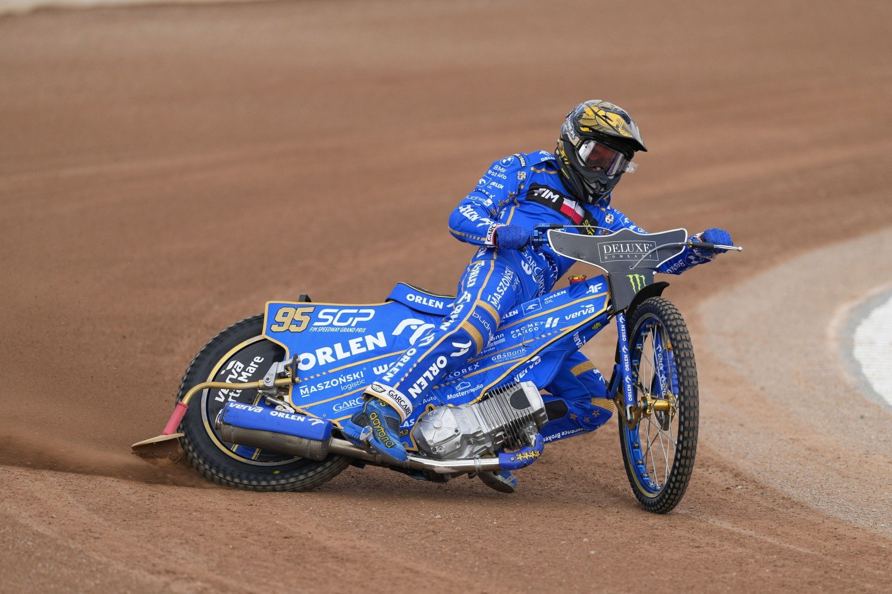
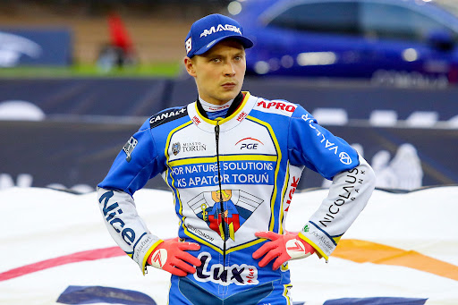

Świat żużla dynamicznie się zmienia, a na torach rywalizuje wiele wybitnych talentów. Poniżej przedstawiamy kilku czołowych aktywnych zawodników, którzy obecnie dominują w ligach i turniejach Grand Prix, w tym tych związanych z Texom Stalą Rzeszów.

Bartosz Zmarzlik
Klub: Orlen Oil Motor Lublin
Obecnie najbardziej utytułowany żużlowiec świata. Wielokrotny mistrz świata, który swoją precyzją i niezłomnym charakterem zdobywa serca fanów. Jego technika jazdy jest wzorem dla wielu młodych adeptów.
Więcej o Bartoszu Zmarzliku
Leon Madsen
Klub: Włókniarz Częstochowa
Duńczyk, wielokrotny medalista Mistrzostw Świata. Jeden z najwszechstronniejszych zawodników, potrafiący dostosować się do każdych warunków torowych. Silny punkt każdej drużyny.
Więcej o Leonie Madsenie
Maciej Janowski
Klub: Betard Sparta Wrocław
Polski reprezentant, utytułowany zawodnik PGE Ekstraligi i uczestnik cyklu Grand Prix. Znany z dynamicznych startów i waleczności na torze.
Więcej o Macieju Janowskim

Jason Doyle
Klub: Fogo Unia Leszno
Australijczyk, były Indywidualny Mistrz Świata. Jego niezwykła determinacja i umiejętność walki do samego końca czynią go groźnym rywalem na każdym torze.
Więcej o Jasonie Doyle'u

Emil Sajfutdinow
Klub: For Nature Solutions KS Apator Toruń
Rosjanin (z polską licencją), dwukrotny Indywidualny Mistrz Świata Juniorów. Jeden z najbardziej utalentowanych zawodników swojego pokolenia, znany z efektownej jazdy.
Więcej o Emilu Sajfutdinowie
Maksym Drabik
Klub: Tauron Włókniarz Częstochowa
Młody polski talent, dwukrotny Indywidualny Mistrz Świata Juniorów. Dynamiczny i perspektywiczny zawodnik, który ma potencjał na zostanie kolejną legendą.
Więcej o Maksymie Drabiku

Krzysztof Kasprzak
Klub: Texom Stal Rzeszów
Doświadczony polski zawodnik, Wicemistrz Świata z 2014 roku. Jeden z liderów Texom Stali Rzeszów, wnoszący do drużyny cenne doświadczenie.
Więcej o Krzysztofie Kasprzaku
Marcin Nowak
Klub: Texom Stal Rzeszów
Jeden z kluczowych seniorów Texom Stali Rzeszów. Solidny i waleczny zawodnik, zawsze dający z siebie wszystko na torze dla rzeszowskiej Stali.
Więcej o Marcinie Nowaku

Adrian Przybyło (Junior)
Klub: Texom Stal Rzeszów
Młody, utalentowany junior Texom Stali Rzeszów, który rozwija swoje umiejętności pod okiem doświadczonych trenerów. Przyszłość rzeszowskiego żużla.
Więcej o Adrianie Przybyło